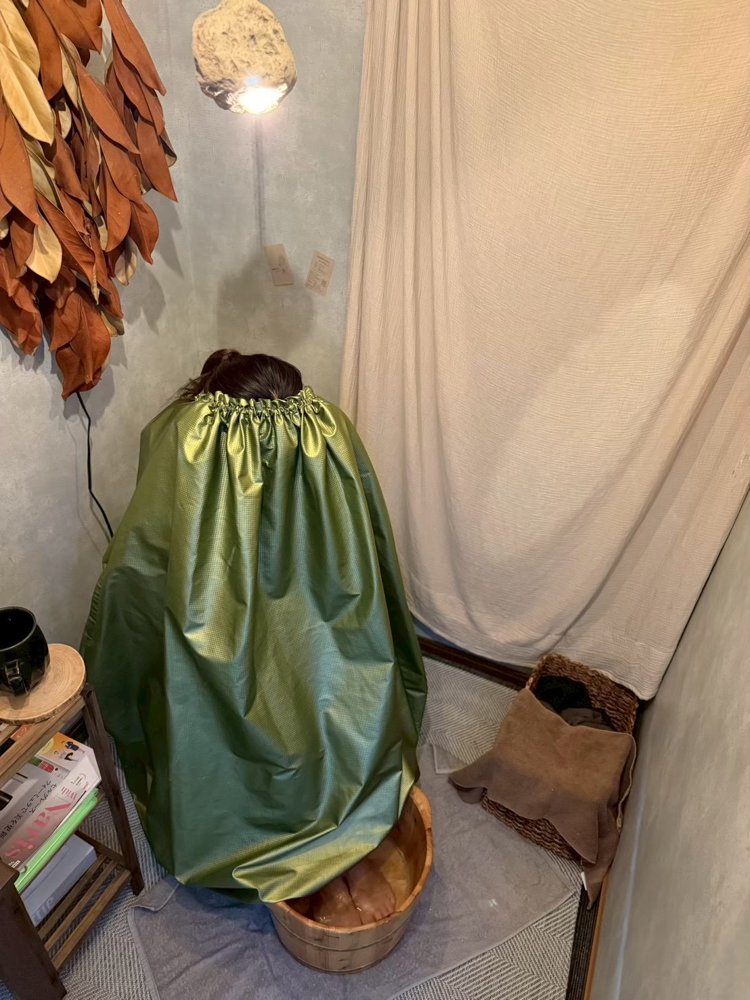
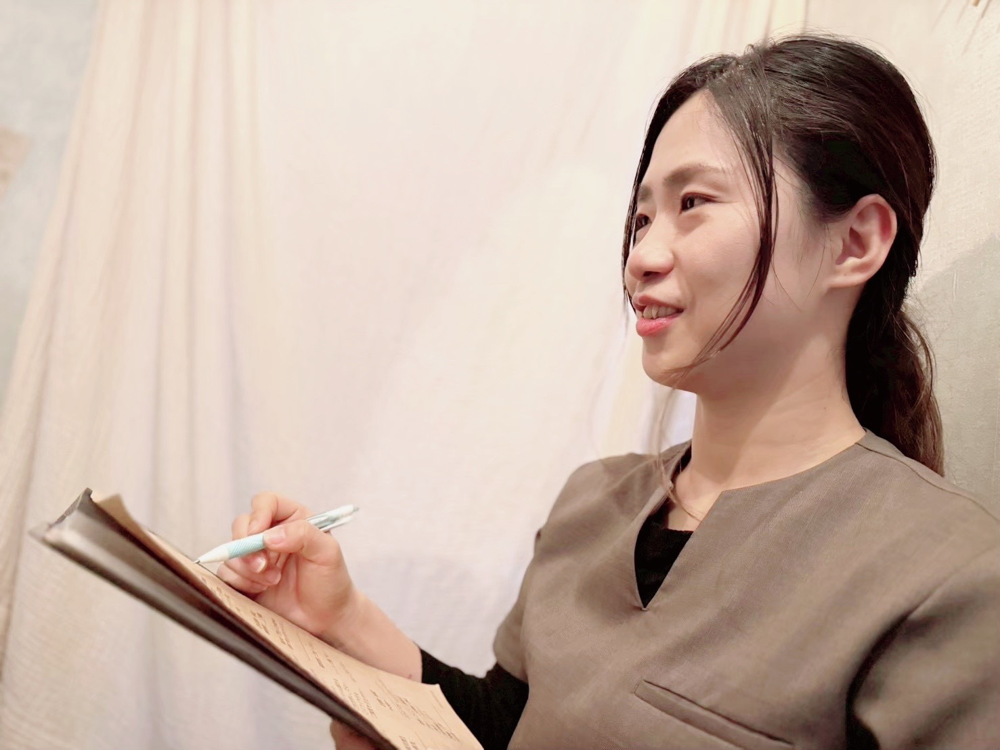
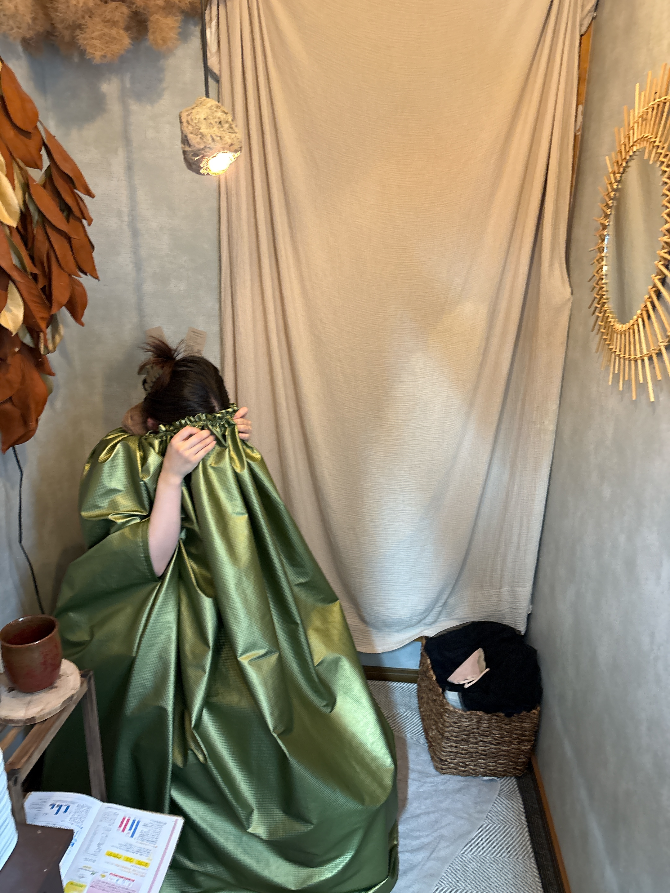
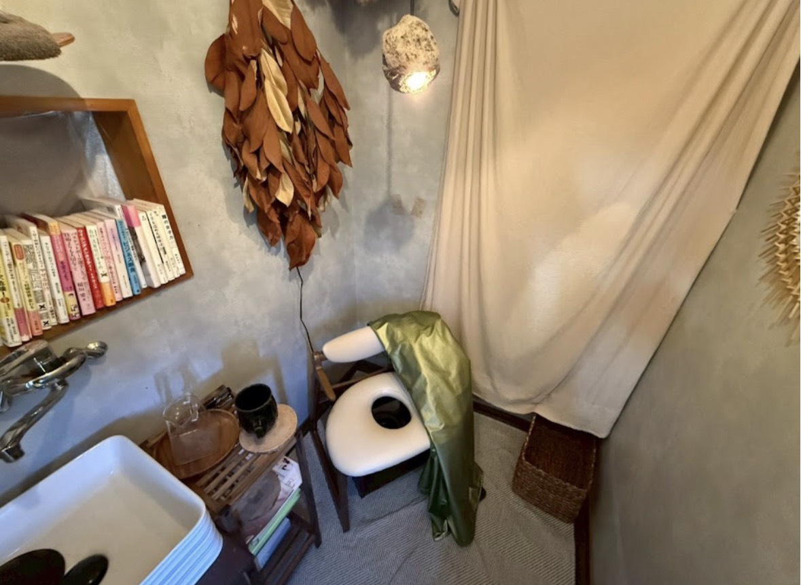
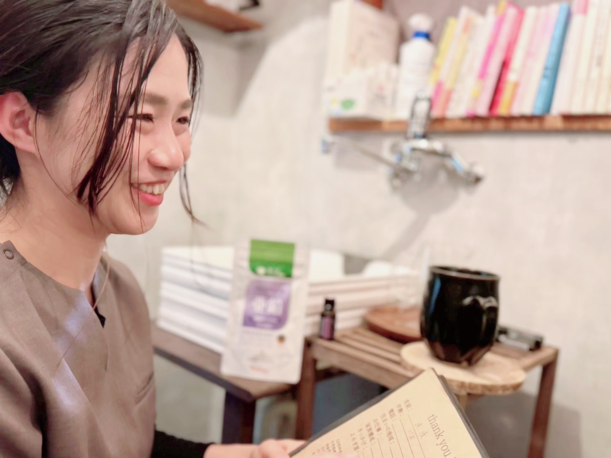
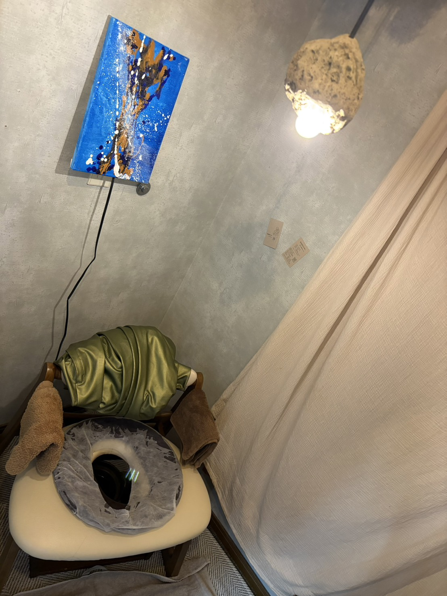

01 / WARMWarm your body.
よもぎ蒸しで、ひと息。
よもぎの蒸気を浴びながら、じんわり温まる。
慌ただしい日常から少し離れて、
心と身体をゆるめるひとときを。
福岡・大牟田 よもぎ蒸し × 栄養学
食べる。温める。整える。
よもぎ蒸しと栄養学で、頑張る女性の身体づくりを。
いつも頑張るあなたに、ほっと、ひと息つける時間を。
女性専用・完全予約制のプライベートサロン
ご予約・ご相談はこちら はじめてのよもぎ蒸し 3,250円 メニューを見る ↓

A little time, just for you.
A quiet moment at salon...uOUR PHILOSOPHY 01
忙しい毎日のなかで、
つい後回しになってしまう、自分のこと。
salon...uは、福岡県大牟田市三池にある
栄養学 × よもぎ蒸しのサロンです。
「食べる」「温める」「整える」。
この3つの習慣を大切に、
頑張る女性の身体づくりをサポートしています。
無理な食事制限ではなく、
今の暮らしの中で続けやすい方法を、
一緒に見つけていきましょう。
OUR CARE 02
その日のひとときも、これからの毎日も。
ふたつのアプローチで、あなたに寄り添います。

01 / WARMWarm your body.
よもぎの蒸気を浴びながら、じんわり温まる。
慌ただしい日常から少し離れて、
心と身体をゆるめるひとときを。

02 / NOURISHCare from within.
温まりながら、食事や生活習慣のお話を。
3か月モニターでは、LINEでのお食事サポートも。
日々の小さな習慣を、一緒に見直していきます。
FOR YOU
妊活中の食生活、産後の体づくり、日々のコンディション。
気になっていることから、お聞かせください。
YOUR TIME 04
ご来店からお帰りまで、約60分。
肩の力を抜いて、お過ごしください。
ご来店後、専用のマントに
お着替えいただきます。
よもぎの蒸気でじんわり温まり、
お茶を飲みながらくつろぐ時間。
汗を拭いて、ゆっくり身支度。
必要であれば、お化粧直しも。
お会計と、次回のご予約。
温まったからだでお帰りください。
QUESTIONS
公式LINE、またはInstagramのDMからご予約・お問い合わせいただけます。ご希望の日時や、ご相談したいことをメッセージでお送りください。
特別な持ち物はありません。楽な服装で、空腹を避けてお越しください。サロンで専用のマントにお着替えいただき、お茶もご用意しています。
生理中・妊娠中の方は、よもぎ蒸しをご利用いただけません。ご予約日や体調について気になることがあれば、ご来店前に公式LINEまたはInstagramのDMからご相談ください。
はい、大丈夫です。よもぎ蒸しのあとは、必要に応じてお化粧直しもしていただけます。
汗の量には個人差があります。じんわり汗ばむ方も、しっかり汗をかく方もいらっしゃいます。その日の体調によっても異なりますので、ご自身のペースでお過ごしください。
リラックスしながらお過ごしいただけます。「話を聞いてほしい」「ゆっくり静かに過ごしたい」、どちらも大歓迎です。お話をしたり、目を閉じてくつろいだり、その日の気分でお過ごしください。
よもぎ蒸しは約40分、お着替えやお会計を含めて約60分が目安です。ご相談内容により異なる場合があるため、ご予約時にご確認ください。
3か月モニター（39,800円）に、よもぎ蒸し6回と3か月間のお食事サポートが含まれます。毎日のお食事をLINEで送っていただき、からだの状態や目的に合わせてアドバイスをお届けします。無理な食事制限ではなく、暮らしの中で続けやすい方法を一緒に見つけていきます。

Google Mapsで道順を確認するACCESS 05
salon...u 栄養学 × よもぎ蒸し
初めてお越しの方は、Googleマップで
「美容室かみゆい倶楽部 大牟田市三池」と検索してください。
道順や駐車場所のご不明点は、ご来店前にご相談ください。
TIME FOR YOURSELF
「こんなことを相談してもいいのかな？」
体調や食事のお悩みも、ご予約前のご質問も。
公式LINEまたはInstagramのDMへ、お気軽にどうぞ。